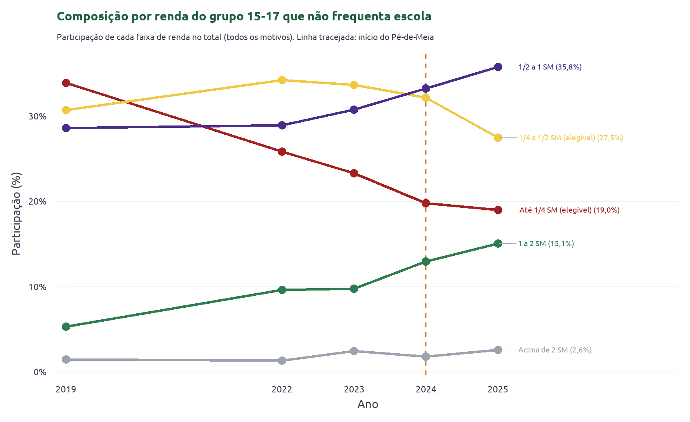
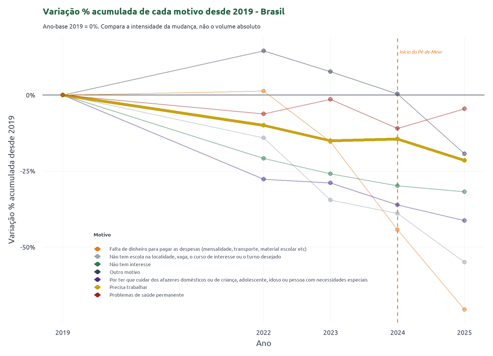
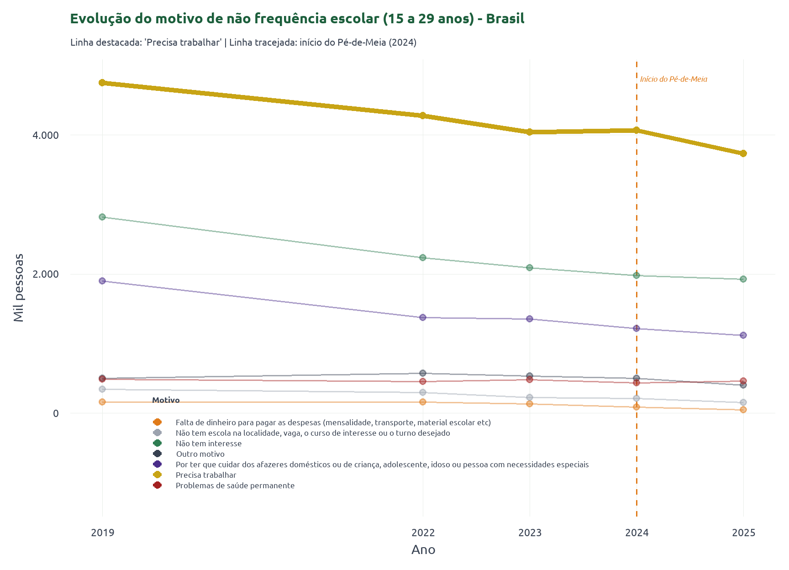
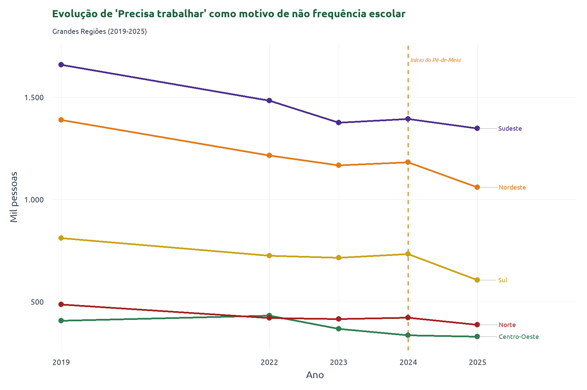
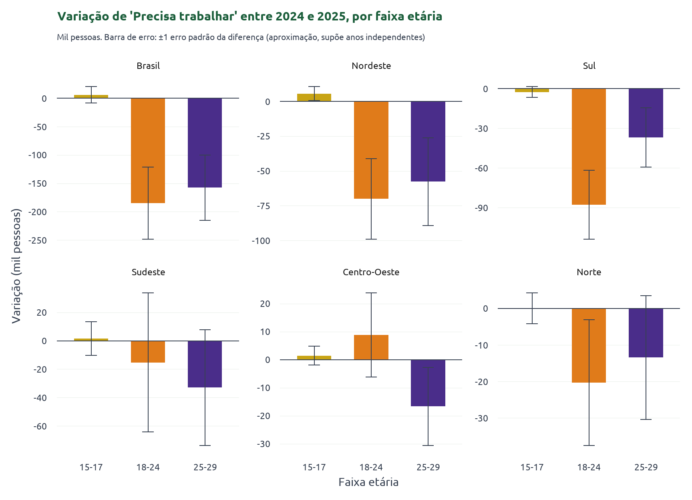
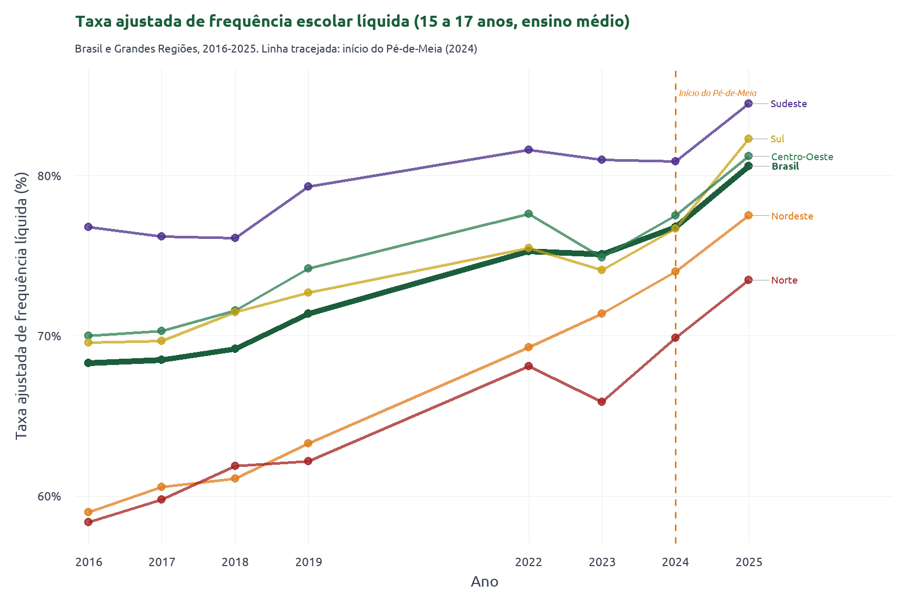

A frequência no ensino médio deu um salto em 2025: quanto disso é Pé-de-Meia?
PNAD
Educação
Ensino Médio
Pé-de-Meia
Juventude
Avaliação de Políticas
A frequência líquida no ensino médio saltou em 2025 e o motivo financeiro da evasão despencou. Seis recortes da PNAD Contínua mostram o que mudou de trajetória depois do Pé-de-Meia.
Entre 2024 e 2025, a taxa de frequência escolar líquida no ensino médio teve o maior salto anual de toda a série da PNAD Contínua, e “falta de dinheiro” como motivo de evasão despencou. No meio desse intervalo está o lançamento do Pé-de-Meia, o programa federal de transferência de renda condicionada para estudantes de baixa renda do ensino médio. Quanto desse movimento tem a ver com o programa?
Este texto não responde a essa pergunta no sentido causal. Isso exigiria isolar o efeito do Pé-de-Meia de tudo o mais que mudou no período. O que fazemos é mais modesto, e útil do mesmo jeito: um acompanhamento de resultados. Passado o primeiro ciclo completo do programa, a PNAD Contínua de 2025 já permite verificar se os indicadores de evasão que o Pé-de-Meia deveria mover se moveram, e em que direção. Reunimos seis recortes, quatro da série do SIDRA (tabelas 7141 e 7220) e dois dos microdados da própria PNADC, e refazemos o enredo um gráfico de cada vez.
A teoria da mudança do programa
Criado pela Lei nº 14.818/2024 e operado pelo MEC em parceria com o FNDE e a Caixa, o Pé-de-Meia atende estudantes de 14 a 24 anos matriculados no ensino médio regular da rede pública cujas famílias estão no CadÚnico com renda per capita de até meio salário mínimo (estudantes da EJA de 19 a 24 anos entram com regras próprias). O benefício entra como uma poupança com quatro partes:
- o incentivo-matrícula, um valor anual pago só por efetivar a matrícula;
- o incentivo-frequência, pago em parcelas mensais ao longo do ano letivo e condicionado a pelo menos 80% de presença;
- o incentivo-conclusão, depositado a cada ano concluído mas só sacável quando o estudante termina o ensino médio;
- um incentivo adicional para quem faz o Enem na 3ª série.
Somados, os quatro chegam a cerca de R$ 9 mil ao longo dos três anos.
A lógica é simples. Para o adolescente de baixa renda, o custo de continuar estudando concorre com a renda que ele traria trabalhando, ou com a necessidade de cuidar da casa e de familiares. Ao transferir renda condicionada a matrícula, presença e progressão, o programa reduz esse custo de oportunidade. Em tese, deveria elevar a matrícula e a rematrícula, segurar o abandono no meio do ano letivo, aumentar a conclusão na idade certa e, sobretudo, enfraquecer “precisa trabalhar” e “falta de dinheiro” como motivos de não frequência. O efeito seria maior onde a transferência pesa mais no orçamento da família e onde a frequência partia de patamares mais baixos, como no Norte e no Nordeste. Motivos que não passam por dinheiro nem por trabalho, como desinteresse ou problema de saúde permanente, não são alvo central dessa lógica; se mudarem, é por outra razão.
1. A composição de quem está fora da escola está mudando
Entre os adolescentes de 15 a 17 anos que não frequentam escola, a fatia dos dois estratos elegíveis ao Pé-de-Meia (renda domiciliar per capita de até 1/4 de salário mínimo e de 1/4 a 1/2) encolheu de cerca de 65% do grupo em 2019 para 47% em 2025. A faixa mais pobre, “até 1/4 SM”, vem perdendo espaço desde 2019; a novidade de 2025 está na faixa “1/4 a 1/2 SM”, que sozinha perde cerca de 5 pontos percentuais de participação em um ano. Enquanto isso, as faixas não elegíveis (“1/2 a 1 SM” e “1 a 2 SM”) sobem sem parar e passam a concentrar a maior parte do grupo fora da escola.
Ou seja: quem está fora da escola é, cada vez menos, o mais pobre, justamente o grupo que o benefício alcança.
2. O motivo “falta de dinheiro” recua rápido
Tomando 2019 como base para cada motivo, “falta de dinheiro para pagar as despesas” é o que mais recua no Brasil, disparado: de 156 mil pessoas em 2019 para 46 mil em 2025, uma queda acumulada de 71%. E o recuo fica mais forte depois de 2024.
É o mecanismo que o Pé-de-Meia deveria mover: renda condicionada à matrícula atinge direto o motivo financeiro.

3. “Precisa trabalhar” cai, mas de forma mais gradual
“Precisa trabalhar” é o motivo de maior peso absoluto e outro alvo direto do programa. Já vinha caindo desde 2019, de 4.753 mil para 4.042 mil em 2023, numa tendência estrutural provavelmente ligada ao mercado de trabalho e ao encolhimento demográfico da coorte jovem. Entre 2023 e 2024 a série quase estaciona (4.068 mil). Só de 2024 para 2025 ela volta a cair com força, para 3.732 mil.

Por Grande Região, a inflexão entre 2024 e 2025 aparece em quase todas, com intensidade desigual. As quedas maiores estão no Sul (cerca de 127 mil pessoas, ou 17%) e no Nordeste (122 mil). No Sudeste, que reúne o maior número absoluto de adolescentes nessa situação, o recuo é modesto; no Norte e no Centro-Oeste o movimento é pequeno. Não é uniforme, mas está espalhado por mais de uma região.

A tabela 7220 junta uma faixa etária larga, de 15 a 29 anos. Como o Pé-de-Meia alcança estudantes de até 24 anos, vale ver se o recuo se distribui por idade do jeito que a elegibilidade faria esperar. Os microdados da PNAD Contínua permitem abrir a variação de 2024 para 2025 por faixa etária e região.

O gráfico tem duas leituras. A primeira: entre os 15 a 17 anos, o grupo mais exposto ao programa, a variação de 2024 para 2025 é pequena em todas as regiões, e nenhuma é estatisticamente robusta. As barras de erro são grandes em relação ao tamanho da mudança. Isso não é evidência contra o programa. Em 2024 o Pé-de-Meia já estava pagando, então, dentro dessa janela de dois anos, não existe um “antes” sem tratamento para comparar. O teste limpo precisa de um ano-base anterior a 2024, como no recorte por renda da seção 1.
A segunda: as quedas se concentram nas faixas de 18 a 24 e 25 a 29 anos. No Brasil, a de 18 a 24 perde cerca de 185 mil pessoas que citam “precisa trabalhar”. A de 25 a 29, inteiramente fora da cobertura do programa, perde 158 mil, magnitude parecida. O padrão por idade não acompanha o limite de 24 anos. Boa parte do recuo agregado de “precisa trabalhar” é a tendência estrutural de fundo (mercado de trabalho, coorte jovem menor), não um efeito concentrado no público do benefício.
O mesmo aparece quando se cruza idade com renda. Entre os adolescentes de 15 a 17 anos elegíveis (renda per capita até 1/2 SM) que citam “precisa trabalhar”, a mudança de 2024 para 2025 fica em 3 mil pessoas, com erro padrão de 9: de novo, indistinguível de zero. No caso de “precisa trabalhar”, o mais provável é que o programa reforce uma tendência que já existia, em vez de criar um efeito do zero.
4. A frequência líquida no ensino médio acelera após 2024
A trajetória da taxa ajustada de frequência escolar líquida de 15 a 17 anos no ensino médio dá a medida desse salto. Ela ficou quase estável no Brasil entre 2022 e 2024, entre 75% e 77%, e então sobe para 80,6% em 2025: a maior variação de um ano para o outro na série desde 2016. O salto pós-2024 aparece em todas as regiões; o Sul e o Centro-Oeste sobem mais, e o Nordeste, que vinha de um dos patamares mais baixos, sobe 3,5 pontos. O Norte segue como a região de menor frequência líquida.

Juntando as pontas
Juntos, os seis gráficos contam a mesma história. A partir de 2024, o motivo financeiro deixou de empurrar os adolescentes mais pobres para fora da escola com a mesma força, e a frequência líquida no ensino médio deu um salto que apareceu em todas as regiões, inclusive as mais pobres, que são as mais dependentes do programa. Ao mesmo tempo, quem continua fora da escola passou a ser, cada vez mais, gente de renda acima da linha de elegibilidade.
Um ponto pede cautela e ainda não foi investigado a fundo: a queda de “precisa trabalhar” se concentrou mais no público de 18 a 29 anos do que entre os adolescentes de 15 a 17. Isso não acompanha o desenho do programa. Os elegíveis ao Pé-de-Meia são um grupo bem delimitado: renda domiciliar per capita de até meio salário mínimo no CadÚnico e idade de 14 a 24 anos. Entre os 15 a 17, e entre os mais pobres, o recuo é quase nulo; a faixa de 18 a 29 inclui quem já passou dos 24 e não pode receber o benefício. Boa parte desse movimento fica, portanto, no campo da tendência estrutural.
Um número dos microdados completa o quadro: a renda domiciliar per capita mediana de quem cita “precisa trabalhar” entre os 15 a 17 anos subiu de R$ 433 em 2019 para R$ 933 em 2025. Quem ainda aponta o trabalho como motivo para não estudar tende, cada vez mais, a vir de uma família acima do corte de renda do programa.
Por que isto é monitoramento, e não avaliação de impacto
A coincidência de datas entre a quebra de tendência e o início do Pé-de-Meia é sugestiva, mas não separa o efeito do programa dos outros choques do período: o mercado de trabalho, políticas educacionais estaduais, mudanças na composição amostral da PNADC e a própria tendência de queda que já vinha de 2019. Parte dos indicadores aqui também não está no centro da teoria da mudança do programa; são resultados vizinhos, que ele pode afetar, mas cujo movimento tem mais de uma causa possível.
Para virar estimativa de efeito, o desenho natural seria uma diferença-em-diferenças: os estratos de renda não elegíveis (por exemplo “1/2 a 1 SM”) como grupo de controle, os elegíveis (até 1/2 SM) como grupo tratado, e 2024 como o corte. O primeiro gráfico do texto já mostra parte desse contraste, com as trajetórias de elegíveis e não elegíveis se afastando ao longo da série e um pouco mais depois de 2024. Fazer a conta com rigor, porém, exige checar tendências paralelas antes de 2024, tratar a elegibilidade por renda como o que ela é (uma proxy, já que a PNADC não enxerga o CadÚnico) e levar a sério os choques concorrentes. É o próximo passo desta linha de trabalho.
Nota
Nota metodológica. As tabelas 7141 (taxa ajustada de frequência escolar líquida) e 7220 (motivo de não frequência escolar, 15 a 29 anos) vêm do SIDRA/IBGE. Os recortes por faixa de renda per capita (VDI5009) e por faixa etária para o motivo “precisa trabalhar” vêm dos microdados da PNAD Contínua, 2º trimestre, processados com PNADcIBGE + survey/srvyr; cada ano tem seu próprio desenho amostral, sem empilhar microdados de períodos diferentes. “Elegível” aqui é uma aproximação pelo corte de renda do Pé-de-Meia (até 1/2 salário mínimo per capita), não elegibilidade confirmada via CadÚnico. As bases já tratadas e o script que as gera (preparar_dados.R) acompanham o código deste artigo.